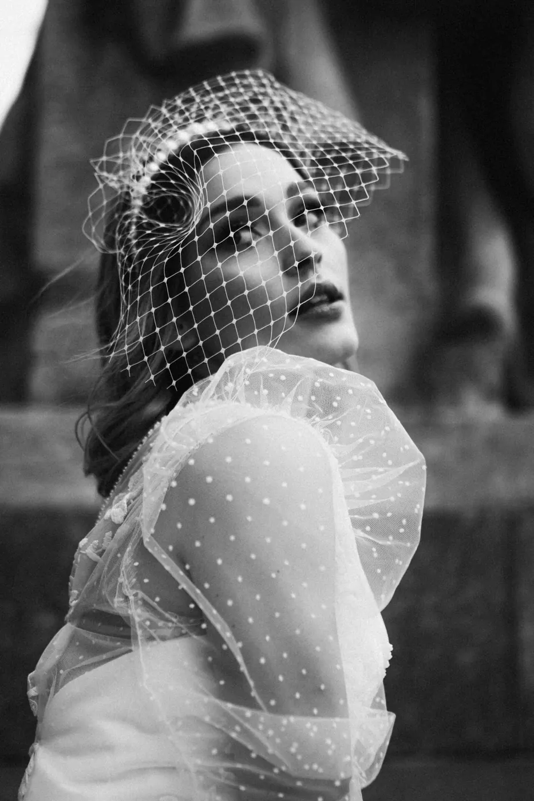
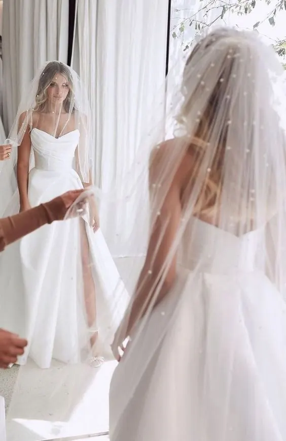
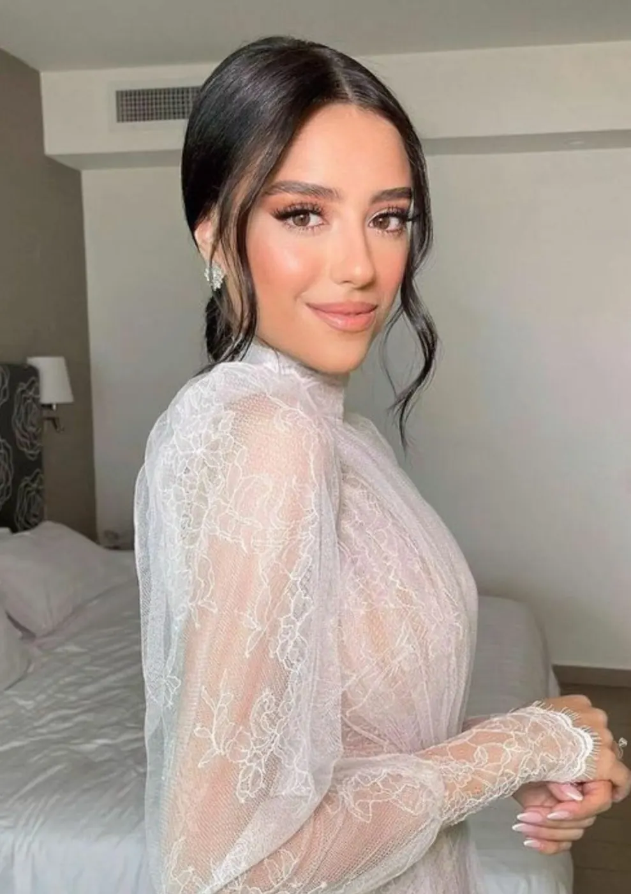
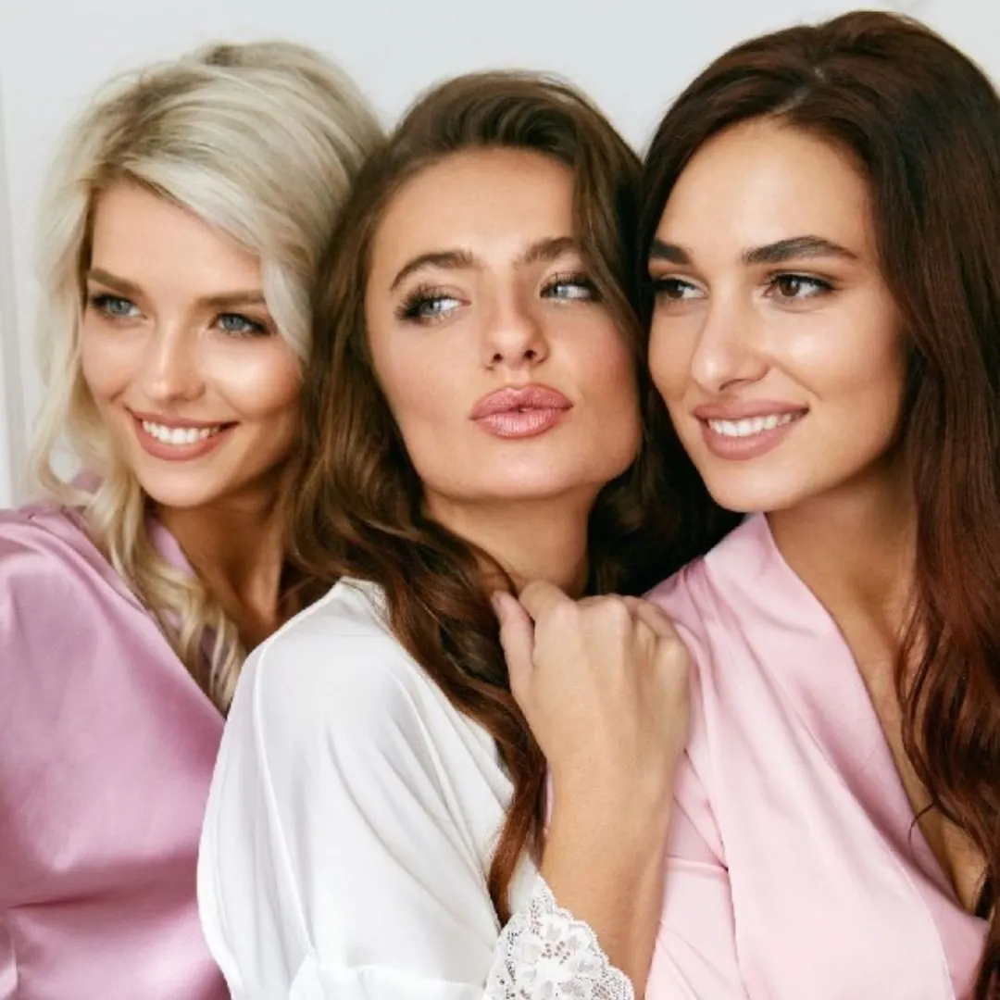

Konsultacja ślubna
Odpowiem na każde Twoje pytanie odnośnie makijażu, fryzury i pielęgnacji przed ślubem. Podsunę sprawdzone rozwiązania, które zamieniają stres w spokój i ekscytację.
bezpłatnie 15 min · telefonicznie lub online
Zapisy na sezon ślubny 2027 i 2028
Wyobraź sobie przygotowania, które otulą Cię uważnością na każdym etapie, a stylizacja ślubna powstanie z prawdziwym zrozumieniem Ciebie, Twoich potrzeb i marzeń.

Chcę, abyś w dniu ślubu, patrząc na siebie, widziała najpiękniejszą wersję siebie: promienną, spokojną i pewną, że każdy detal został dopracowany z troską i doświadczeniem.
Makijaż i fryzura ślubna to nie „usługa”, to fundament Twojego ślubnego wizerunku. Tworzę w pełni spersonalizowany makijaż i fryzurę, dopasowane do Twojej urody, osobowości, stylu oraz wizji ślubu. Zanim powstanie finalny efekt, uważnie słucham i analizuję Twoje potrzeby.
Specjalizuję się w makijażach, które subtelnie podkreślają urodę: lekkich, delikatnych, bez efektu maski, a jednocześnie bardzo trwałych, które bez problemu przetrwają całą noc.






Odpowiem na każde Twoje pytanie odnośnie makijażu, fryzury i pielęgnacji przed ślubem. Podsunę sprawdzone rozwiązania, które zamieniają stres w spokój i ekscytację.
bezpłatnie 15 min · telefonicznie lub online
Przedślubna konsultacja pielęgnacyjna, analiza skóry i spersonalizowany plan pielęgnacji dla Panny Młodej.
499 zł 1,5 h · 5-6 miesięcy przed ślubem
950 zł 4 h · 4-5 miesięcy przed ślubem
1 250 zł do 3 h
Realizacja tylko w studiu, w godz. 6.00-9.00, 9.00-12.00 lub 12.00-15.00 do wyboru.
Makijaż i fryzura ślubna dla Panny Młodej + 2 usługi dla Twoich najbliższych + korekta Pana Młodego.
od 3 500 zł do 6 h
Z dojazdem do wskazanej lokacji lub w studiu. Realizacja: Anna Stachniak & Beauty Team. Możliwość rozszerzenia o 1, 2 lub 3 usługi i realizacji przez 2 specjalistów.
Makijaż i fryzura ślubna dla Panny Młodej + 8 usług dla Twoich najbliższych.
6 300 zł do 7 h
Z dojazdem do wskazanej lokacji lub w studiu. Realizacja: Anna Stachniak & Beauty Team. Możliwość rozszerzenia o 1 do 5 usług i realizacji przez 2 lub 3 specjalistów.
Bardzo profesjonalne wykonanie zarówno makijażu, jak i fryzury. Pani Ania potrafi trafnie odczytać oczekiwania. Korzystałam z fryzury i makijażu ślubnego oraz makijażu i fryzur dla mamy i chrzestnej i wszystkie byłyśmy bardzo zadowolone. Pani Ania jest też dużym wsparciem w kwestiach organizacyjnych: przygotowuje harmonogram, na którym opieramy się nie tylko my, ale również fotografowie i kamerzyści.
Ania stworzyła piękny makijaż, który komplementowali wszyscy goście, i fryzurę, która wytrzymała całą noc. Do tego wspaniale zajęła się moją świadkową i dwiema koleżankami. Szczególne podziękowania ma moja teściowa, która rzadko się maluje: dzięki podejściu Ani poczuła się pewna siebie i wyglądała pięknie.
Jestem wymagającą i dokładną klientką, ale przygotowanie i atmosfera w dniu ślubu przeszły moje najśmielsze oczekiwania! Samo przygotowanie do usługi (harmonogram, zdjęcia, notatki) sprawiło, że czułam się zaopiekowana i odprężona. Makijaż i fryzura były idealne, nic nie wymagało poprawek. Look naturalny, elegancki, podkreślający urodę.
Ania towarzyszyła mi w dniu mojego ślubu i zrobiła mi przepiękną fryzurę oraz makijaż. To profesjonalistka, ale przede wszystkim cudowna i ciepła osoba. Sprawia, że w tak wyjątkowym dniu człowiek zapomina całkowicie o stresie.

Od 15 lat tworzę w pełni spersonalizowane doświadczenia ślubne dla kobiet, które oczekują najwyższej jakości i uważności.
Opiekuję się Tobą kompleksowo: od pierwszej rozmowy, przez indywidualną strategię pielęgnacji skóry i włosów, dobór kosmetyków i zabiegów, aż po makijaż i fryzurę w dniu ślubu. Każdy element looku: suknia, makijaż, fryzura, dodatki, kolorystyka, kwiaty, jest spójny i przemyślany. Tu nic nie dzieje się przypadkiem.
Pracuję z ograniczoną liczbą Panien Młodych w sezonie, aby każdej z nich zapewnić najwyższy standard współpracy.
Zaprojektujmy Twój ślubny wizerunekIm szybciej, tym lepiej, minimum 8 miesięcy przed ślubem. Terminy na kolejne lata rezerwuję na bieżąco, a niektóre klientki rezerwują nawet z półtorarocznym wyprzedzeniem. Terminy poza sezonem ślubnym (listopad-marzec) są bardziej dostępne, nawet na 3 tygodnie przed datą.
Około 5-6 miesięcy przed ślubem. Warto mieć już wybraną suknię, bo jest punktem wyjścia w doborze makijażu, fryzury i stylizacji.
To najlepszy czas, żeby poprawić wygląd cery i zadbać o włosy. Podczas próby często przeprowadzam też konsultację pielęgnacyjną i ustalam indywidualny program pielęgnacji. Na dobrze nawilżonej i wypielęgnowanej cerze makijaż wygląda piękniej, naturalniej i jest trwalszy.
Tak, w pierwszych miesiącach roku (styczeń-marzec). W sezonie ślubnym (kwiecień-październik) w soboty wykonuję głównie usługi ślubne, więc na próbę umawiamy się w innym dogodnym terminie.
Tak, próba jest bardzo ważna. Pozwala zobaczyć się w stylizacji, sprawdzić trwałość makijażu i fryzury i wprowadzić uwagi przed dniem ślubu. W dniu ślubu zwykle nie ma już czasu na zmiany, a próba daje spokój ducha i pewność siebie.
W moim studiu na warszawskim Mokotowie (okolice metra Służew), ul. J.S. Bacha 35, piętro 1.
Jeden makijaż i jedną fryzurę. Poprzedza je szczegółowa konsultacja: poznanie preferencji i oczekiwań, dobór do typu urody i osobowości.
Tak, na terenie całej Polski, przy zamówieniu pakietu De Lux lub Premium. Koszt dojazdu ustalany jest indywidualnie.
Tak, na terenie Europy, swobodnie komunikując się z gośćmi po angielsku. Za granicą realizuję tylko pakiet De Lux z możliwością rozszerzenia o 2 usługi (liczba zależna od godziny ślubu). Po stronie Panny Młodej jest dodatkowo: organizacja i koszt przelotu w obie strony (obowiązkowo bagaż rejestrowany), nocleg w miejscu przygotowań lub w pobliżu oraz zwrot kosztów lub organizacja dojazdów i wyżywienia. Każdy dzień weekendowy (pt, sob, nd) jest płatny jako kolejny pakiet De Lux na wyłączność.
Na profesjonalnych produktach renomowanych marek, głównie marek dla wizażystów i marek premium, m.in.: Dior, Hourglass, YSL, Armani, Kanebo, Shiseido, Guerlain, Benefit, Smashbox, Estée Lauder, Chanel, Rare Beauty, Kryolan, Ben Nye, Screen Face, Mahron, Inglot, MAC, Lancôme, Bobbi Brown, Make Up Factory, Natasha Denona, ArtDeco, Pupa, Tom Ford, Huda Beauty, Charlotte Tilbury, Clinique. Pracuję z zachowaniem najwyższych standardów higieny.
Strona używa plików cookies do statystyk i mapy Google. Wybierz, na co się zgadzasz. Więcej